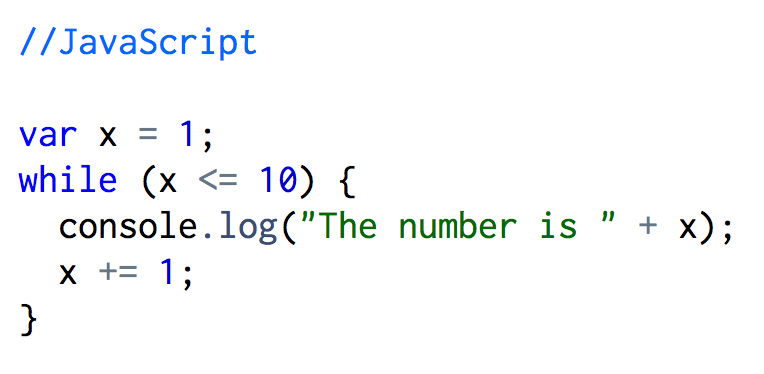
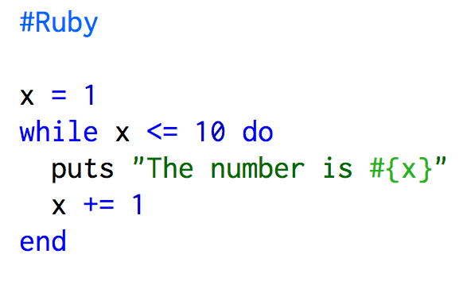
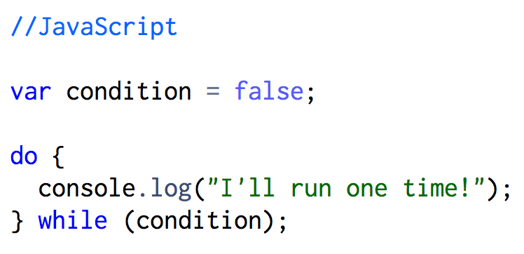
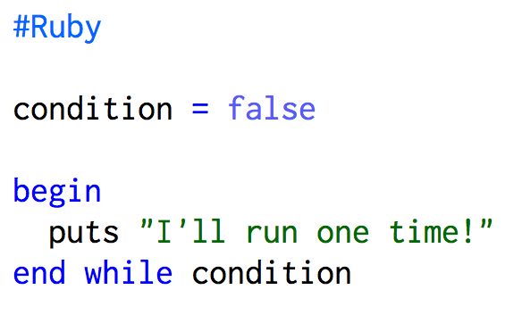
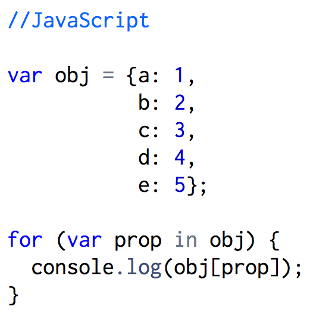
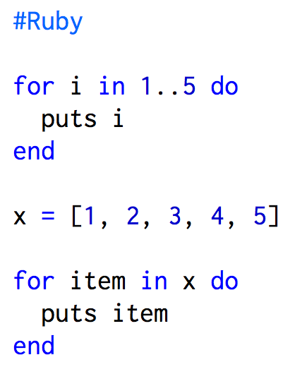
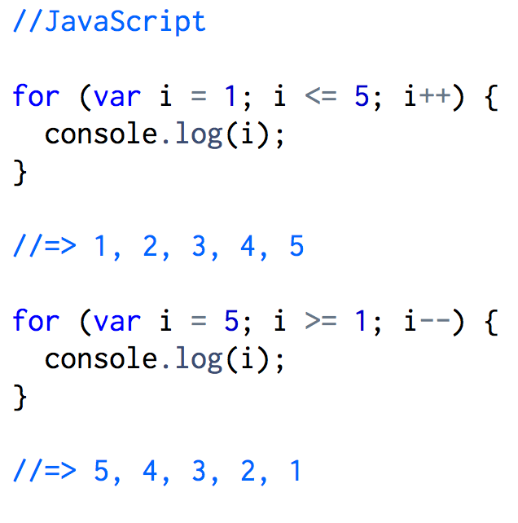

Looping in Ruby vs. Looping in JavaScript
Sunday, December 6, 2015
Loops are a handy way to run the same piece of code for certain number of times or until a specified condition is met. When looping, the block of code being executed could have a different value each time or remain the same. Some Ruby loops are while, do/while, and for that take a block of code denoted by "{ ... }" or "do ... end". JavaScript has the loops while, do/while, for/in, and for with a specified condition in "()" and the code block denoted by "{ ... }" with each statement inside ending in a semicolon. At first, when learning about Ruby and JavaScript, it can be difficult to remember the loops each language supports and the syntax, so I'll go over the similarities and differences between looping in each language.
Ruby and JavaScript While Loops
In both programming languages, the while loop runs a block of code repeatedly while a certain condition is true and stops executing it when the condition becomes false. The difference is in the syntax, as shown below and both loops will print the numbers 1 through 10.
 Ruby and JavaScript Do/While Loops
Ruby's and JavaScript's do/while loop is very similar to their while loop. The difference is the conditional check is placed at the end of the loop, which allows the code to be executed at least once whereas the while loop may not execute at all. Each loop while run one time because the conditional check at the end evaluates to false.
 Ruby's For Loop vs. JavaScript's For/In Loop
For loops in Ruby are used to loop over a collection of elements like an array, hash, set, or range but it is rare in Ruby and the .each method is preferred. Ruby's for loop begins with the "for" keyword, followed by a variable, next the word "in", and then the collection of elements. A JavaScript for/in loop iterates, in random order, over the enumberable properties of an object like arrays or objects. When iterating over arrays where the order of access needs to be consistent then you should use a for loop with a numeric index. The output for all the examples will print the numbers 1-5.
 JavaScript's For Loop
A Javascript for loop uses three statements that are separated by semicolons to determine the number of times it loops through a block of code. The first statement initializes a variable for the loop and is only executed at the start. The second statement is the test condition the determines when the loop should terminate. The third statement is an updater that will increment or decrement the loop's counter.
